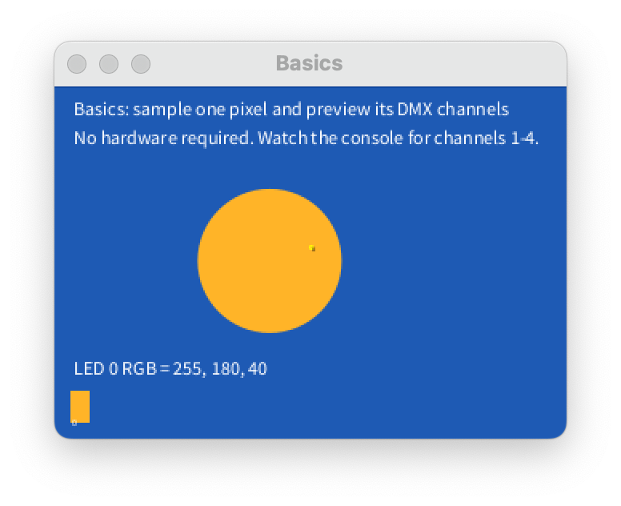
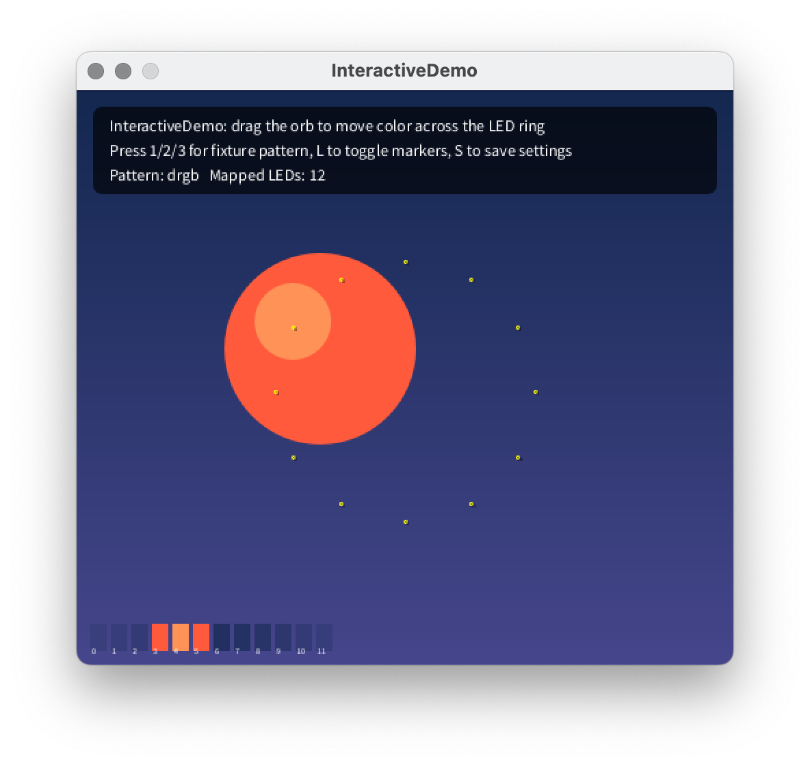
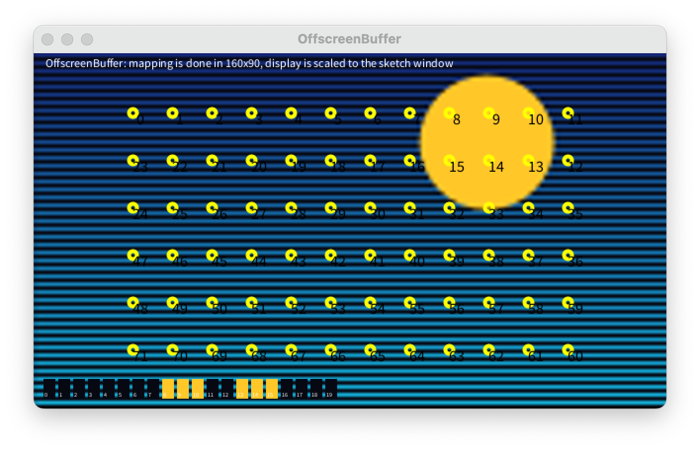
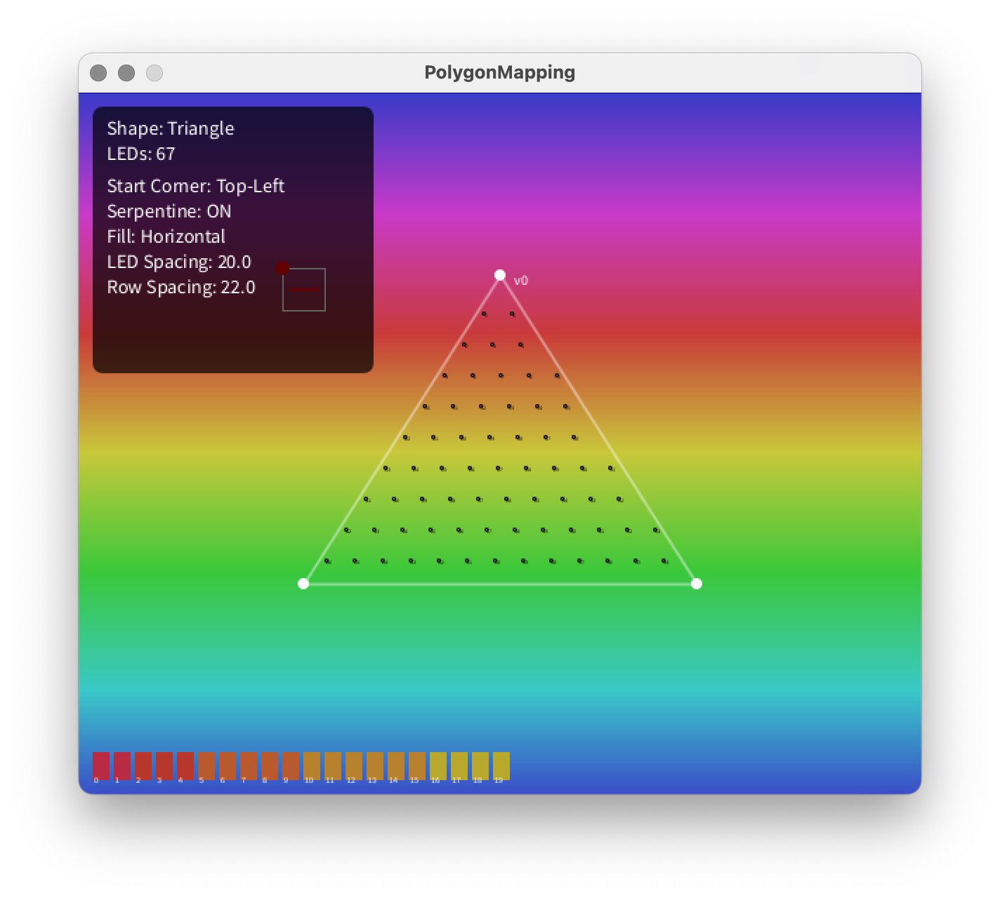
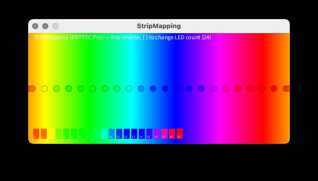
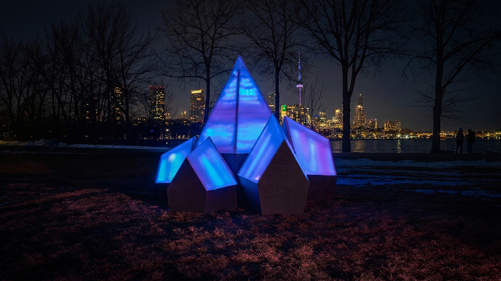
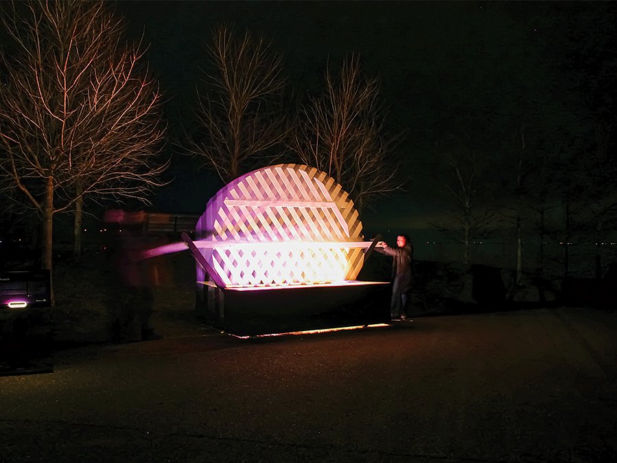
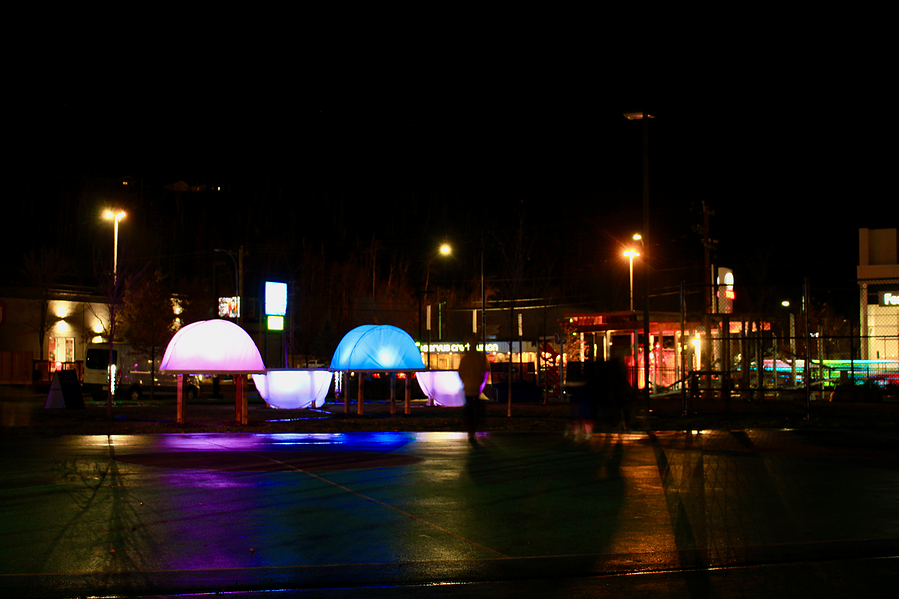
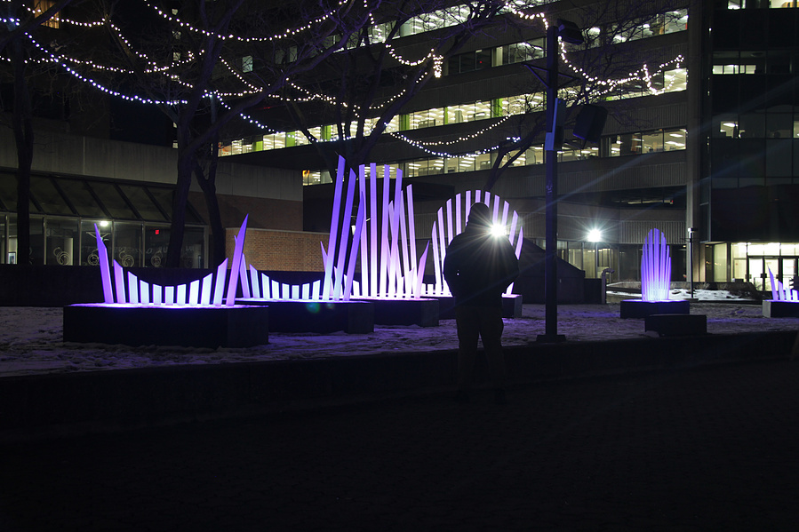

Canvas2DMX
A Processing library for mapping canvas pixels to DMX lighting fixtures in real time. Define LED layouts, apply colour correction, and send to any DMX backend.
Features
- Real-time canvas pixel sampling
- Strips, rings, grids, polygons
- Custom DMX channel patterns
- Gamma & colour correction
- GRB chip support
- ENTTEC, FT232RL, OLA output
- Off-screen buffer support
- Live debug visualization
Quick Start
import com.studiojordanshaw.canvas2dmx.*;
Canvas2DMX c2d;
void setup() {
size(400, 200);
pixelDensity(1);
c2d = new Canvas2DMX(this);
c2d.mapLedStrip(0, 8, width/2f, height/2f, 40, 0, false);
c2d.setChannelPattern("grb"); // match your fixture
c2d.setResponse(2.6); // gamma for WS2812/WS2815
c2d.setStartAt(1);
}
void draw() {
background(0);
ellipse(mouseX, mouseY, 100, 100);
int[] colors = c2d.getLedColors();
c2d.visualize(colors);
// send via your backend — ENTTEC Pro, FT232RL, OLA, or your own
c2d.sendToDmx((ch, val) -> dmx.sendValue(ch, val));
}
Examples





Demo
Made with Canvas2DMX
Installations built using this library — Studio Jordan Shaw

Constellation Range
Six illuminated faceted peaks with aurora gradients responding to Bluetooth proximity — OCAD U Gala 2026
Same Material / Different Time
Anamorphic LED installation — addressable strips transform a tree into a sail through light and perspective

Crosshatch
Kinetic interactive installation — handles alter lighting, shadows, and projected patterns in real time

Signal
Interactive light sculpture driven by open weather data and visitor interaction

Rays
Infrared-interactive public light sculpture celebrating post-pandemic community reconnection — Hamilton